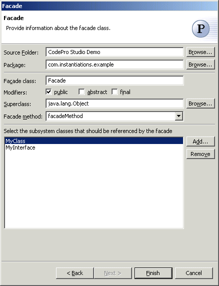

Facade Pattern
The  Facade Pattern provides a unified interface to a set of interfaces in a
subsystem. Facade defines a higher-level interface that makes the subsystem
easier to use. Structuring a system into subsystems helps reduce complexity.
A common design goal is to minimize the communication and dependencies
between subsystems. One way to achieve this goal is to introduce a facade
object that provides a single, simplified interface to the more general
facilities of a subsystem.
Facade Pattern provides a unified interface to a set of interfaces in a
subsystem. Facade defines a higher-level interface that makes the subsystem
easier to use. Structuring a system into subsystems helps reduce complexity.
A common design goal is to minimize the communication and dependencies
between subsystems. One way to achieve this goal is to introduce a facade
object that provides a single, simplified interface to the more general
facilities of a subsystem.
Wizard

| Option | Description | Default |
| Source folder | Enter a source folder for the new class. Either type a valid source folder path or click Browse to select a source folder via a dialog. | The source folder of the element that was selected when the wizard was started. |
| Package | Enter a package to contain the new class. Either type a valid package name or click Browse to select a package via a dialog. | The package of the element that was selected when the wizard has been started. |
| Facade class | Type a name for the new facade class. | <Facade> |
| Modifiers | Select one or more access modifiers for the new class.
|
public |
| Superclass | Type or click Browse to select a superclass for this class. | <java.lang.Object> |
| Facade method | Type or select the name of the method that will reference each subsystem | <facadeMethod> |
| Subsystems | Click Add to choose the subsystems that the new facade class will wrap. | <blank> |
Applicability
Use the Facade pattern when
- you want to provide a simple interface to a complex subsystem. Subsystems often get more complex as they evolve. Most patterns, when applied, result in more and smaller classes. This makes the subsystem more reusable and easier to customize, but it also becomes harder to use for clients that don't need to customize it. A facade can provide a simple default view of the subsystem that is good enough for most clients. Only clients needing more customizability will need to look beyond the facade.
- there are many dependencies between clients and the implementation classes of an abstraction. Introduce a facade to decouple the subsystem from clients and other subsystems, thereby promoting subsystem independence and portability.
- you want to layer your subsystems. Use a facade to define an entry point to each subsystem level. If subsystems are dependent, then you can simplify the dependencies between them by making them communicate with each other solely through their facades.
Additional Resources
http://c2.com/cgi/wiki?FacadePattern
http://www.wikipedia.com/wiki/Facade+pattern